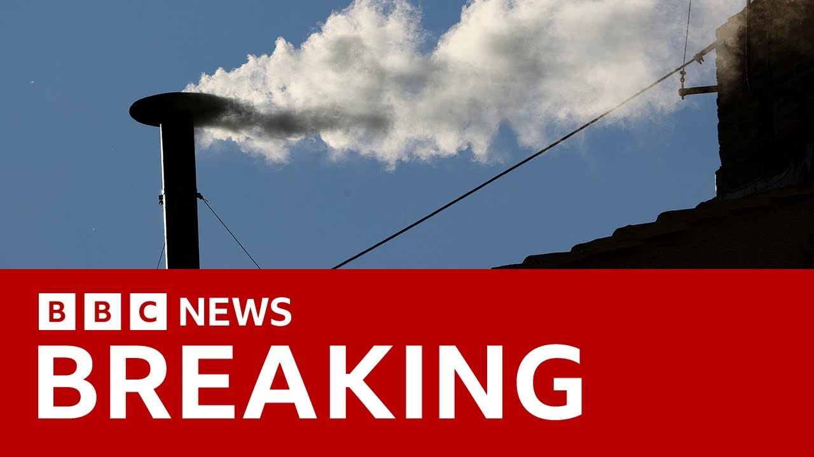

来B站一起耍【Global每日英语简报】
【西斯廷教堂冒出白烟，新教皇当选 | BBC新闻】
Summary: Breaking news: White smoke from the Sistine Chapel signals the election of a new pope, chosen by 133 cardinals, marking a historic moment for 1.4 billion Catholics worldwide.
摘要： 突发新闻：西斯廷教堂的白烟标志着新教皇的当选，由133名枢机主教选出，这是全球14亿天主教徒的历史性时刻。

⏱️ Estimated Reading Time: 2 min
We can report that in the last few seconds we have seen white smoke billowing out of the cyine chapel chimney.
我们可以报道，在过去的几秒钟里，我们看到西斯廷教堂的烟囱冒出白烟。
This is breaking news.
这是突发新闻。
We have a new pope.
我们有了新教皇。
The cyine chapel chimney has signaled white smoke at 8 minutes past 5 this evening.
今晚5点08分，西斯廷教堂的烟囱冒出了白烟。
This means that 133 cardinals inside the cyine chapel have decided, have voted and have elected the 267th pope, the heir to St. Peter, a man who will lead 1.4 billion Catholics around the world.
这意味着西斯廷教堂内的133名枢机主教已经决定、投票并选出了第267任教皇，圣彼得的继承人，他将领导全球14亿天主教徒。
The crowd is cheering.
人群在欢呼。
There is jubilation down below in St. Peter Square.
圣彼得广场上洋溢着欢庆的气氛。
They have been waiting all day.
他们等待了一整天。
And there you have confirmation.
现在得到了确认。
The bells of St. Peter are ringing out.
圣彼得大教堂的钟声响起。
This is the news that Catholics around the world have been waiting for.
这是全球天主教徒一直等待的消息。
White smoke pouring out of that famous chimney.
白烟从那个著名的烟囱中涌出。
The bells herald a new hope, a new era in the history of the Catholic Church.
钟声预示着新的希望，天主教历史上的新时代。
You can see there the jubilation of the crowds.
你可以看到人群的欢庆。
They have been waiting, some of them all day since this morning to see this moment, to capture this moment.
他们一直在等待，有些人从早上就开始等待这一刻，记录这一刻。
The cardinals, cardinal electors inside the cysteine chapel took just two days to choose a pope.
西斯廷教堂内的枢机主教们仅用两天时间就选出了教皇。
This pope has been elected on the fourth vote as was Benedict the 16th in 2005.
这位教皇在第四轮投票中当选，与2005年的本笃十六世一样。
There is clapping and there is cheering and the bells continue to ring.
人们在鼓掌、欢呼，钟声持续响起。
You are watching BBC News.
您正在观看BBC新闻。
You're watching the dawn of a new era in the Catholic Church as the white smoke that you see there emanating from the cyine chapel chimney signals the election of a new pope.
您正在见证天主教新时代的黎明，因为您看到的从西斯廷教堂烟囱中冒出的白烟标志着新教皇的当选。